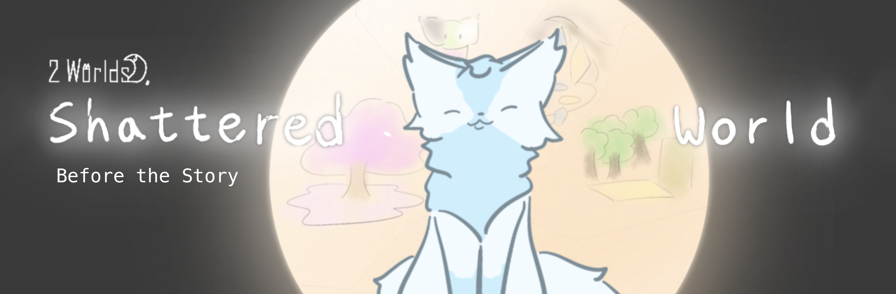
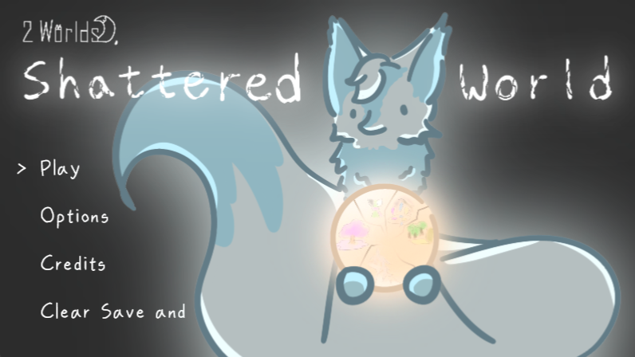
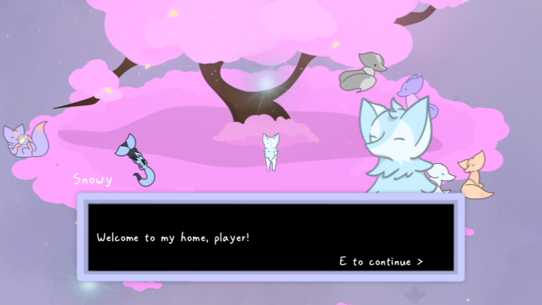
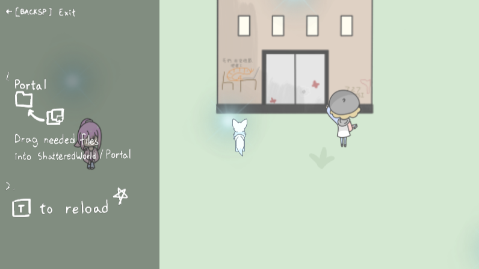
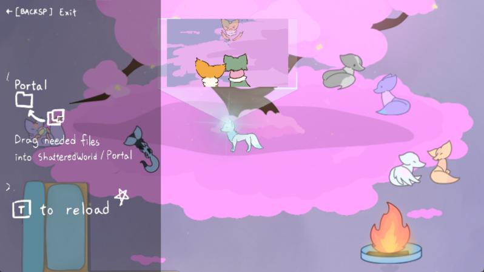

Trailer
- no trailer available as of now -
Introduction
in 2 Worlds, the game world was half in ruin due to a error in the area deletion code. while a new fixed build can fix the problem, the older builds are out of reach and cannot be fixed.
however...
welcome to Shattered World, where you repair a broken game world!
well, the demo of it, at least.
saving a world isn't something you would naturally know how to do (unless you're some poorly written anime protagonist, I guess), right?
note that this game, while being the demo of the main game, have its own story and serves as more of a prequel to it
General information
Additional information (Technical Information? idk)
Screenshots



